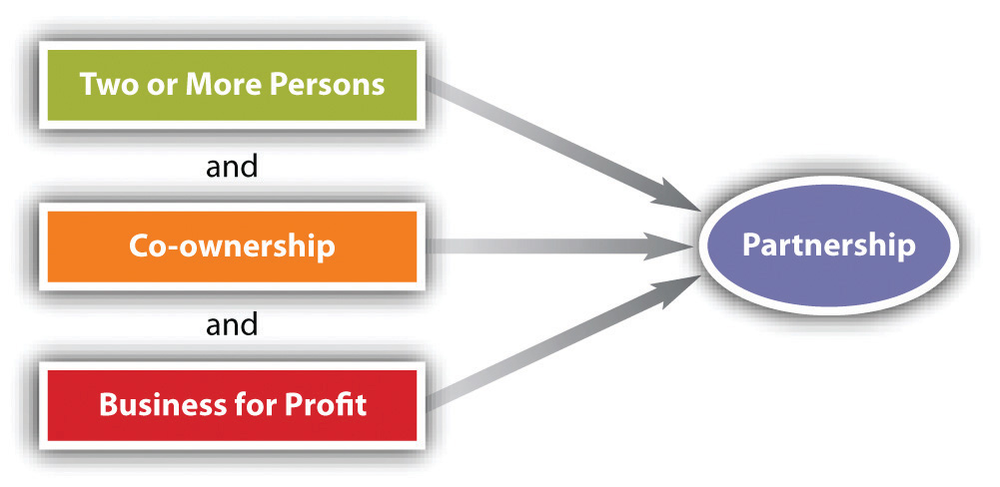

The most common way of forming a partnership is expressly—that is, in words, orally or in writing. Such a partnership is called an express partnershipA partnership intentionally created and recognized, orally or in writing.. If parties have an express partnership with no partnership agreement, the relevant law—the Uniform Partnership Act (UPA) or the Revised Uniform Partnership Act (RUPA)—applies the governing rules.
Assume that three persons have decided to form a partnership to run a car dealership. Able contributes $250,000. Baker contributes the building and space in which the business will operate. Carr contributes his services; he will manage the dealership.
The first question is whether Able, Baker, and Carr must have a partnership agreement. As should be clear from the foregoing discussion, no agreement is necessary as long as the tests of partnership are met. However, they ought to have an agreement in order to spell out their rights and duties among themselves.
The agreement itself is a contract and should follow the principles and rules spelled out in Chapter 8 "Introduction to Contract Law" through Chapter 16 "Remedies" of this book. Because it is intended to govern the relations of the partners toward themselves and their business, every partnership contract should set forth clearly the following terms: (1) the name under which the partners will do business; (2) the names of the partners; (3) the nature, scope, and location of the business; (4) the capital contributions of each partner; (5) how profits and losses are to be divided; (6) how salaries, if any, are to be determined; (7) the responsibilities of each partner for managing the business; (8) limitations on the power of each partner to bind the firm; (9) the method by which a given partner may withdraw from the partnership; (10) continuation of the firm in the event of a partner’s death and the formula for paying a partnership interest to his heirs; and (11) method of dissolution.
In forming a partnership, three of these items merit special attention. And note again that if the parties do not provide for these in their agreement, RUPA will do it for them as the default.
As discussed earlier in this chapter, a partnership is not limited to a direct association between human beings but may also include an association between other entities, such as corporations or even partnerships themselves.A joint venture—sometimes known as a joint adventure, coadventure, joint enterprise, joint undertaking, syndicate, group, or pool—is an association of persons to carry on a particular task until completed. In essence, a joint venture is a “temporary partnership.” In the United States, the use of joint ventures began with the railroads in the late 1800s. Throughout the middle part of the twentieth century joint ventures were common in the manufacturing sector. By the late 1980s, they increasingly appeared in both manufacturing and service industries as businesses looked for new, competitive strategies. They are aggressively promoted on the Internet: “Joint Ventures are in, and if you’re not utilizing this strategic weapon, chances are your competition is, or will soon be, using this to their advantage.…possibly against you!” (Scott Allen, “Joint Venturing 101,” About.com Entrepreneurs, http://entrepreneurs.about.com/od/beyondstartup/a/jointventures.htm).As a risk-avoiding device, the joint venture allows two or more firms to pool their differing expertise so that neither needs to “learn the ropes” from the beginning; neither needs the entire capital to start the enterprise.Partnership rules generally apply, although the relationship of the joint venturers is closer to that of special than general agency as discussed in Chapter 20 "Relationships between Principal and Agent". Joint venturers are fiduciaries toward one another. Although no formality is necessary, the associates will usually sign an agreement. The joint venture need have no group name, though it may have one. Property may be owned jointly. Profits and losses will be shared, as in a partnership, and each associate has the right to participate in management. Liability is unlimited.Sometimes two or more businesses will form a joint venture to carry out a specific task—prospecting for oil, building a nuclear reactor, doing basic scientific research—and will incorporate the joint venture. In that case, the resulting business—known as a “joint venture corporation”—is governed by corporation law, not the law of partnership, and is not a joint venture in the sense described here. Increasingly, companies are forming joint ventures to do business abroad; foreign investors or governments own significant interests in these joint ventures. For example, in 1984 General Motors entered into a joint venture with Toyota to revive GM’s shuttered Fremont, California, assembly plant to create New United Motor Manufacturing, Inc. (NUMMI). For GM the joint venture was an opportunity to learn about lean manufacturing from the Japanese company, while Toyota gained its first manufacturing base in North America and a chance to test its production system in an American labor environment. Until May 2010, when the copartnership ended and the plant closed, NUMMI built an average of six thousand vehicles a week, or nearly eight million cars and trucks. These vehicles were the Chevrolet Nova (1984–88), the Geo Prizm (1989–97), the Chevrolet Prizm (1998–2002), and the Hilux (1991–95, predecessor of the Tacoma), as well as the Toyota Voltz, the Japanese right-hand-drive version of the Pontiac Vibe. The latter two were based on the Toyota Matrix. Paul Stenquist, “GM and Toyota’s Joint Venture Ends in California,” New York Times, April 2, 2010, http://wheels.blogs.nytimes.com/2010/04/02/g-m-and-toyotas-joint-venture-ends-in-california. Family members can be partners, and partnerships between parents and minor children are lawful, although a partner who is a minor may disaffirm the agreement.
If the business cannot be performed within one year from the time that the agreement is entered into, the partnership agreement should be in writing to avoid invalidation under the Statute of Frauds. Most partnerships have no fixed term, however, and are partnerships “at will” and therefore not covered by the Statute of Frauds.
Able, Baker, and Carr decide that it makes good business sense to choose an imposing, catchy, and well-known name for their dealership—General Motors Corporation. There are two reasons why they cannot do so. First, their business is a partnership, not a corporation, and should not be described as one. Second, the name is deceptive because it is the name of an existing business. Furthermore, if not registered, the name would violate the assumed or fictitious name statutes of most states. These require that anyone doing business under a name other than his real name register the name, together with the names and addresses of the proprietors, in some public office. (Often, the statutes require the proprietors to publish this information in the newspapers when the business is started.) As Loomis v. Whitehead in Section 22.3.2 "Creation of a Partnership: Registering the Name" shows, if a business fails to comply with the statute, it could find that it will be unable to file suit to enforce its contracts.
An implied partnershipA partnership that arises where parties’ behavior objectively manifests an intention to create a relationship that the law recognizes as a partnership. exists when in fact there are two or more persons carrying on a business as co-owners for profit. For example, Carlos decides to paint houses during his summer break. He gathers some materials and gets several jobs. He hires Wally as a helper. Wally is very good, and pretty soon both of them are deciding what jobs to do and how much to charge, and they are splitting the profits. They have an implied partnership, without intending to create a partnership at all.
But how do we know whether an implied partnership has been created? Obviously, we know if there is an express agreement. But partnerships can come into existence quite informally, indeed, without any formality—they can be created accidentally. In contrast to the corporation, which is the creature of statute, partnership is a catchall term for a large variety of working relationships, and frequently, uncertainties arise about whether or not a particular relationship is that of partnership. The law can reduce the uncertainty in advance only at the price of severely restricting the flexibility of people to associate. As the chief drafter of the Uniform Partnership Act (UPA, 1914) explained,
All other business associations are statutory in origin. They are formed by the happening of an event designated in a statute as necessary to their formation. In corporations this act may be the issuing of a charter by the proper officer of the state; in limited partnerships, the filing by the associates of a specified document in a public office. On the other hand, an infinite number of combinations of circumstances may result in co-ownership of a business. Partnership is the residuum, including all forms of co-ownership, of a business except those business associations organized under a specific statute.W. D. Lewis, “The Uniform Partnership Act,” Yale Law Journal 24 (1915): 617, 622.
Figure 22.1 Partnership Tests
Because it is frequently important to know whether a partnership exists (as when a creditor has dealt with only one party but wishes to also hold others liable by claiming they were partners, see Section 22.3.1 "Tests of Partnership Existence", Chaiken v. Employment Security Commission), a number of tests have been established that are clues to the existence of a partnership (see Figure 22.1 "Partnership Tests"). We return to the definition of a partnership: “the association of two or more persons to carry on as co-owners a business for profit[.]” The three elements are (1) the association of persons, (2) as co-owners, (3) for profit.
This element is pretty obvious. A partnership is a contractual agreement among persons, so the persons involved need to have capacity to contract. But RUPA does not provide that only natural persons can be partners; it defines person as follows: “‘Person’ means an individual, corporation, business trust, estate, trust, partnership, association, joint venture, government, governmental subdivision, agency, or instrumentality, or any other legal or commercial entity.”RUPA, Section 101(10). Thus unless state law precludes it, a corporation can be a partner in a partnership. The same is true under UPA.
If what two or more people own is clearly a business—including capital assets, contracts with employees or agents, an income stream, and debts incurred on behalf of the operation—a partnership exists. A tougher question arises when two or more persons co-own property. Do they automatically become partners? The answer can be important: if one of the owners while doing business pertinent to the property injures a stranger, the latter could sue the other owners if there is a partnership.
Co-ownership comes in many guises. The four most common are joint tenancy, tenancy in common, tenancy by the entireties, and community property. In joint tenancy, the owners hold the property under a single instrument, such as a deed, and if one dies, the others automatically become owners of the deceaseds share, which does not descend to his heirs. Tenancy in common has the reverse rule: the survivor tenants do not take the deceaseds share. Each tenant in common has a distinct estate in the property. The tenancy by the entirety and community property (in community-property states) forms of ownership are limited to spouses, and their effects are similar to that of joint tenancy.
Suppose a husband and wife who own their home as tenants by the entirety (or community property) decide to spend the summer at the seashore and rent their home for three months. Is their co-ownership sufficient to establish that they are partners? The answer is no. By UPA Section 7(2) and RUPA Section 202(b)(1), the various forms of joint ownership by themselves do not establish partnership, whether or not the co-owners share profits made by the use of the property. To establish a partnership, the ownership must be of a business, not merely of property.
There are two aspects to consider with regard to profits: first, whether the business is for-profit, and second, whether there is a sharing of the profit.
Unincorporated nonprofit organizations (UNAs) cannot be partnerships. The paucity of coherent law governing these organizations gave rise in 2005 to the National Conference of Commissioners of Uniform Laws’ promulgation of the Revised Uniform Unincorporated Nonprofit Association Act (RUUNAA). The prefatory note to this act says, “RUUNAA was drafted with small informal associations in mind. These informal organizations are likely to have no legal advice and so fail to consider legal and organizational questions, including whether to incorporate. The act provides better answers than the common law for a limited number of legal problems…There are probably hundreds of thousands of UNAs in the United States including unincorporated nonprofit philanthropic, educational, scientific and literary clubs, sporting organizations, unions, trade associations, political organizations, churches, hospitals, and condominium and neighborhood associations.”Revised Uniform Unincorporated Nonprofit Associations Act, http://www.abanet.org/intlaw/leadership/policy/RUUNAA_Final_08.pdf. At least twelve states have adopted RUUNAA or its predecessor.
While co-ownership does not establish a partnership unless there is a business, a business by itself is not a partnership unless co-ownership is present. Of the tests used by courts to determine co-ownership, perhaps the most important is sharing of profits. Section 202(c) of RUPA provides that “a person who receives a share of the profits of a business is presumed to be a partner in the business,” but this presumption can be rebutted by showing that the share of the profits paid out was (1) to repay a debt; (2) wages or compensation to an independent contractor; (3) rent; (4) an annuity, retirement, or health benefit to a representative of a deceased or retired partner; (5) interest on a loan, or rights to income, proceeds, or increase in value from collateral; or (5) for the sale of the goodwill of a business or other property. Section 7(4) of UPA is to the same effect.
Courts are not limited to the profit-sharing test; they also look at these factors, among others: the right to participate in decision making, the duty to share liabilities, and the manner in which the business is operated. Section 22.3.1 "Tests of Partnership Existence", Chaiken v. Employment Security Commission, illustrates how these factors are weighed in court.
Ordinarily, if two people are not legally partners, then third parties cannot so regard them. For example, Mr. Tot and Mr. Tut own equal shares of a house that they rent but do not regard it as a business and are not in fact partners. They do have a loose “understanding” that since Mr. Tot is mechanically adept, he will make necessary repairs whenever the tenants call. On his way to the house one day to fix its boiler, Mr. Tot injures a pedestrian, who sues both Mr. Tot and Mr. Tut. Since they are not partners, the pedestrian cannot sue them as if they were; hence Mr. Tut has no partnership liability.
Suppose that Mr. Tot and Mr. Tut happened to go to a lumberyard together to purchase materials that Mr. Tot intended to use to add a room to the house. Short of cash, Mr. Tot looks around and espies Mr. Tat, who greets his two friends heartily by saying within earshot of the salesman who is debating whether to extend credit, “Well, how are my two partners this morning?” Messrs. Tot and Tut say nothing but smile faintly at the salesman, who mistakenly but reasonably believes that the two are acknowledging the partnership. The salesman knows Mr. Tat well and assumes that since Mr. Tat is rich, extending credit to the “partnership” is a “sure thing.” Messrs. Tot and Tut fail to pay. The lumberyard is entitled to collect from Mr. Tat, even though he may have forgotten completely about the incident by the time suit is filed. Under Uniform Partnership Act Section 16(1), Mr. Tat would be liable for the debt as being part of a partnership by estoppelPartnership arising when in fact none exists, where one allows himself or herself to be represented as a partner, thus incurring partnership liability.. The Revised Uniform Partnership Act is to the same effect:
Section 308. Liability of Purported Partner.
(a) If a person, by words or conduct, purports to be a partner, or consents to being represented by another as a partner, in a partnership or with one or more persons not partners, the purported partner is liable to a person to whom the representation is made, if that person, relying on the representation, enters into a transaction with the actual or purported partnership.
Partnership by estoppel has two elements: (1) a representation to a third party that there is in fact a partnership and (2) reliance by the third party on the representation. See Section 22.3.3 "Partnership by Estoppel", Chavers v. Epsco, Inc., for an example of partnership by estoppel.
A partnership is any two or more persons—including corporate persons—carrying on a business as co-owners for profit. A primary test of whether a partnership exists is whether there is a sharing of profits, though other factors such as sharing decision making, sharing liabilities, and how the business is operated are also examined.
Most partnerships are expressly created. Several factors become important in the partnership agreement, whether written or oral. These include the name of the business, the capital contributions of each partner, profit sharing, and decision making. But a partnership can also arise by implication or by estoppel, where one has held herself as a partner and another has relied on that representation.